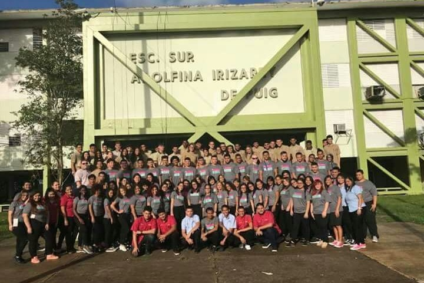

Adolfina Irizarry de Puig nació en Lajas el 14 de febrero de 1884. Lajas la conoce como maestra. Sus estudios en San Juan la llevan a quedarse en Toa Baja con familiares en esta área. Aquí se establece y se casa con el joven Geraldo Puig. Para la época que llega , Toa Baja no tenia Iglesia Luterana. Ella, junto a otros toabajeños, levantan lo que se conoce hoy día como la Iglesia Luterana San Pedro Apóstol. La maestra es también maestra de escuela bíblica, organiza su Asociación de Damas Luteranas, y representa a Toa Baja por primera Vez en la Liga de Iglesias Luteranas del Caribe. Ya para el 1944 se realiza como maestra de escuela secundaria con especialización en Ingles y Matemáticas. Junto al primer pasado Superintendente de Escuela Leonardo Vargas, comprometido a darle a Toa Baja su primera escuela superior, la Escuela Superior Adolfina Irizarry de Puig fue fundada en el 1942 y ve con orgullo en el 1944 graduarse a los primeros 14 estudiantes. En el año 1961 es declarada hija adoptiva de Toa Baja. "La Egida", institucion para maestros retirados del servicio fue una de sus grandes tareas. En el 1964 muere a la edad de 80 años dejando a las futuras generaciones su legado y enseñanzas.
En la Escuela Superior Adolfina Irizarry de Puig reconocemos al estudiante como el centro de nuestro sistema educativo. Nuestra visión esta centrada en el desarrollo integral del estudiante, comprometido con su aprendizaje y el desarrollo de valores. La colaboración de los padres es esencial para lograr el cambio hacia el proceso de transformación y excelencia.
Nuestra misión educativa es propiciar un ambiente intelectual y social efectivo, de una cultura de paz, donde cada uno de los miembros de la comunidad colabore con compromiso, para ayudar al estudiante a lograr las metas educativas de forma integral.